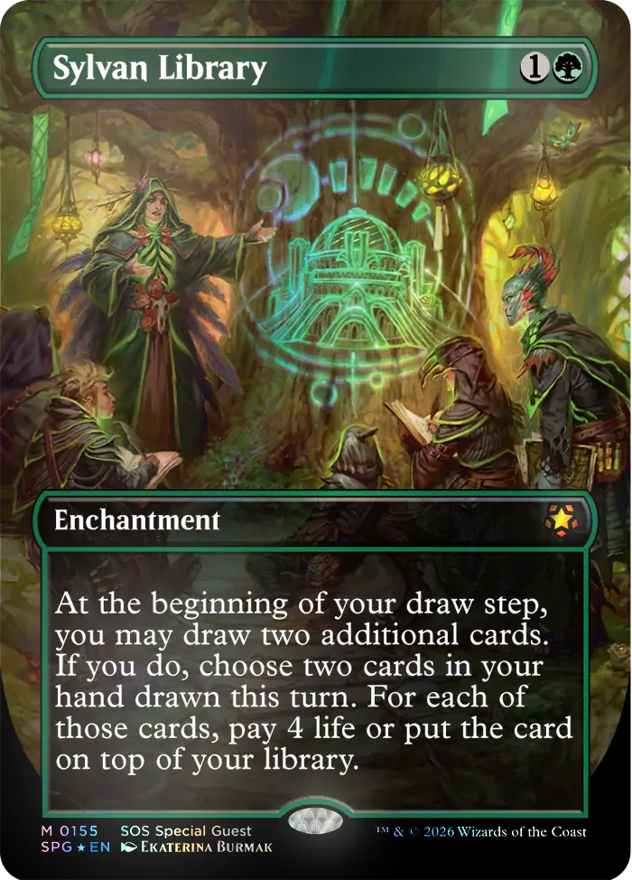
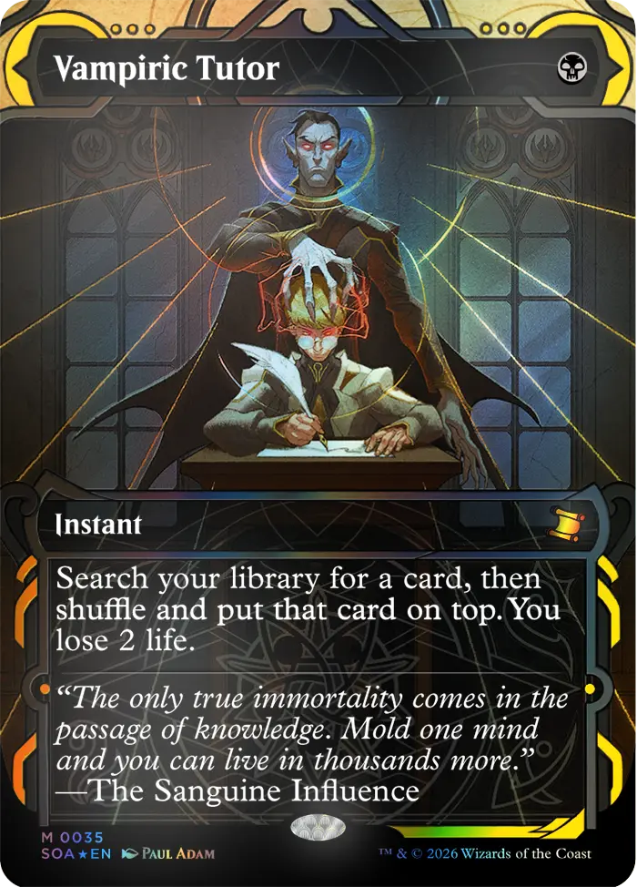
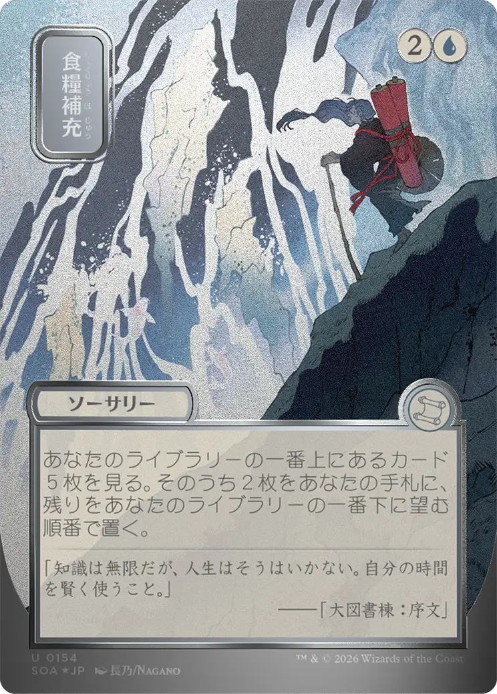
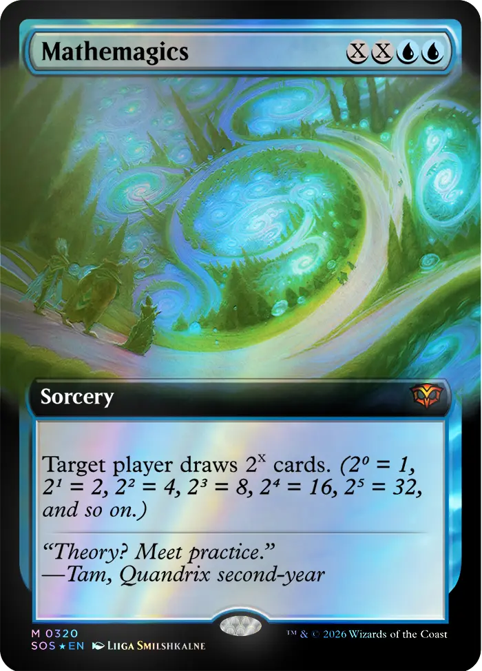

ScrollRenderer · ScrollImage · ScrollScene
One canvas.
Four scenes.
A single fixed WebGL canvas renders every image and the animated background simultaneously, scissor-tested to each DOM element. Scroll to see it in motion.

01 — Light & Shadow
Where illumination meets form.
Every shadow is a shape in its own right. The eye finds meaning in contrast — in the boundary between what is revealed and what remains concealed.
Each image above is rendered through a WebGL fragment shader via
ScrollImage, which uploads the source as a GPU
texture and applies cover-fit, parallax, and chromatic aberration
per-frame.

02 — The Fluid Edge
Between states, geometry is honest.
Flow is not chaos — it is clarity in motion. Where matter transitions, the underlying structure of a system becomes briefly legible.
The dark aurora in the background is a domain-warped FBM rendered
by a ScrollScene anchored to a fixed full-viewport
element, giving it perpetual coverage.

03 — Depth of Field
Distance compresses to a single plane.
What lies beyond the focal point is not absence — it is possibility held softly out of reach. The blurred edge is where attention ends and imagination begins.
Scroll progress is tracked per-element via
onBeforeRender and passed as u_scroll
to drive the parallax offset in the image shader.

04 — Still Becoming
Stillness is motion's accumulation.
The moment before change holds everything. Inertia is not resistance — it is the weight of becoming made temporarily visible.
All four images and the background share a single WebGL context
and one requestAnimationFrame loop via
ScrollRenderer.